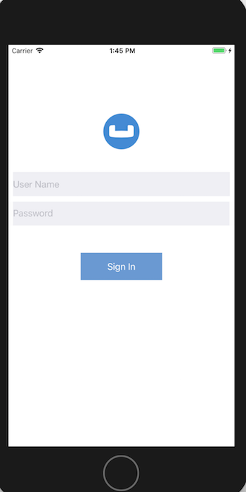
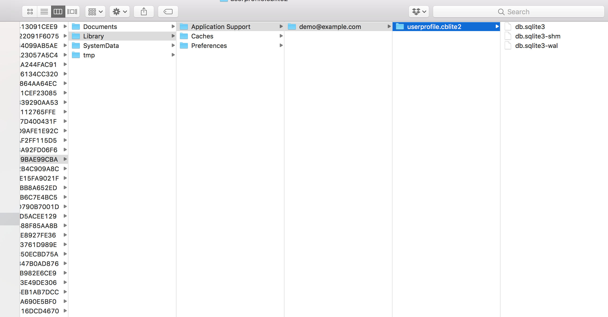
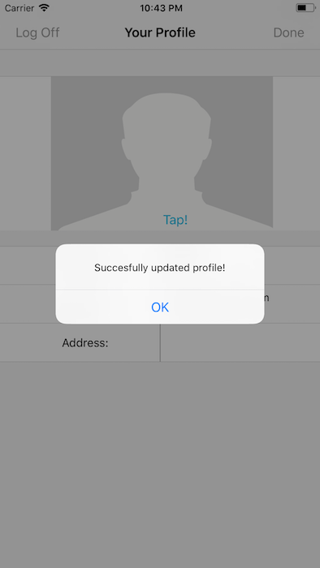

User Profile Sample: Couchbase Lite Fundamentals
Introduction
Couchbase Mobile brings the power of NoSQL to the edge. It is comprised of three components:
-
Couchbase Lite, an embedded, NoSQL JSON Document Style database for your mobile apps
-
Sync Gateway, an internet-facing synchronization mechanism that securely syncs data between mobile clients and server, and
-
Couchbase Server, a highly scalable, distributed NoSQL database platform
Couchbase Mobile supports flexible deployment models. You can deploy
-
Couchbase Lite as a standalone embedded database within your mobile apps or,
-
Couchbase Lite enabled mobile clients with a Sync Gateway to sychronize data between your mobile clients or,
-
Couchbase Lite enabled clients with a Sync Gateway to sync data between mobile clients and the Couchbase Server, which can persist data in the cloud (public or private)
This tutorial will walk you through a very basic example of how you can use Couchbase Lite 2.x in standalone mode within your Swift app. In this mode, Couchbase Lite will serve as a local, embedded data store within your iOS App and can be a replacement for SQLite or Core Data.
You will learn the fundamentals of
-
Database Operations
-
Document CRUD Operations
You can learn more about Couchbase Mobile here
Prerequisites
This tutorial assumes familiarity with building swift apps with Xcode.
-
iOS (Xcode 10+) Download latest version from the Mac App Store
-
git (Optional) This is required if you would prefer to pull the source code from GitHub repo.
-
Create a free github account if you don’t already have one
-
git can be downloaded from git-scm.org
-
App Overview
We will be working with a very simple app. It does one thing -
-
Allows users to log in and create or update his/her user profile information
The user profile information is persisted as a Document in the local Couchbase Lite Database. So subsquently, when the user logs out and logs back in again, the profile information is loaded from the Database.

Installation
Fetching App Source Code
Option 1 : Git Clone
-
Clone the standalone branch of the
User Profile Demoproject from GitHub. Type the following command in your terminalgit clone -b standalone https://github.com/couchbaselabs/userprofile-couchbase-mobile.git
Option 2 : Download .zip
-
Download the
User Profile Demoproject from here
Installing Couchbase Lite Framework
-
Next, we will download the Couchbase Lite 2.0 framework. The Couchbase Lite iOS framework is distributed via Cocoapods, Carthage or you can download the pre-built framework. In our example, we will be downloading the pre-built version of the framework. For this, do the following
cd /path/to/UserProfileDemo/content/modules/userprofile/examples sh install_10.sh
Now, let’s verify the installation
Try it Out
-
Open the
UserProfileDemo.xcodeproj. The project would be located at/path/to/UserProfileDemo/content/modules/userprofile/examplesopen UserProfileDemo.xcodeproj -
Build and run the project using the simulator in Xcode. While you can run the app on a real device, we recommend the Simulator so you can see the debug logs in the output console.
-
Verify that you see the login screen

Data Model
Couchbase Lite is a JSON Document Store. A Document is a logical collection of named fields and values.The values are any valid JSON types. In addition to the standard JSON types, Couchbase Lite supports Date and Blob data types.
While it is not required or enforced, it is a recommended practice to include a "type" property that can serve as a namespace for related documents.
The "User Profile" Document
The app deals with a single Document with a "type" property of "user". The document ID is of the form "user::<email>". An example of a document would be
{
"type":"user",
"name":"Jane Doe",
"email":"jame.doe@earth.org",
"address":"101 Main Street",
"image":CBLBlob (image/jpg) (1)
}| 1 | Special Blob data type that is associated with the profile image. |
UserRecord
The "user" Document is encoded to a native struct named UserRecord.
let kUserRecordDocumentType = "user"
typealias ExtendedData = [[String:Any]]
struct UserRecord : CustomStringConvertible{
let type = kUserRecordDocumentType
var name:String?
var email:String?
var address:String?
var imageData:Data?
var extended:ExtendedData? // future
var description: String {
return "name = \(String(describing: name)), email = \(String(describing: email)), address = \(String(describing: address)), imageData = \(imageData)"
}
}Basic Database Operations
In this section, we will do a code walkthrough of the basic Database operations
Create / Open a Database
When a user logs in, we create an empty Couchbase Lite Database for the user if one does not exist.
-
Open the DatabaseManager.swift file and locate the
openOrCreateDatabaseForUser()function.func openOrCreateDatabaseForUser(_ user:String, password:String, handler:(_ error:Error?)->Void) { -
We create an instance of the
DatabaseConfiguration. This is an optional step. In our case, we would like to override the default path of the Database. Every user has their own instance of the Database that is located in a folder corresponding to the user.var options = DatabaseConfiguration() guard let defaultDBPath = _applicationSupportDirectory else { fatalError("Could not open Application Support Directory for app!") return } // Create a folder for the logged in user if one does not exist let userFolderUrl = defaultDBPath.appendingPathComponent(user, isDirectory: true) let userFolderPath = userFolderUrl.path let fileManager = FileManager.default if !fileManager.fileExists(atPath: userFolderPath) { try fileManager.createDirectory(atPath: userFolderPath, withIntermediateDirectories: true, attributes: nil) } // Set the folder path for the CBLite DB options.directory = userFolderPath -
Then we create a local Couchbase Lite database named "userprofile" for the user. If a database already exists for the user, the existing version is returned.
// Create a new DB or get handle to existing DB at specified path _db = try Database(name: kDBName, config: options)
Listening to Database Changes
You can be asynchornously notified of any change (add, delete, update) to the Database by registering a change listener with the Database. In our app, we are not doing anything special with the Database change notification other than logging the change. In a real world app, you would use this notification for instance, to update the UI.
-
Open the DatabaseManager.swift file and locate the
registerForDatabaseChanges()function.fileprivate func registerForDatabaseChanges() { -
We register a change listener with the database. This is an optional step. We track the
ListenerTokenas it is needed for removing the listener.// Add database change listener dbChangeListenerToken = db?.addChangeListener({ [weak self](change) in guard let `self` = self else { return } for docId in change.documentIDs { if let docString = docId as? String { let doc = self._db?.document(withID: docString) if doc == nil { print("Document was deleted") } else { print("Document was added/updated") } } } })
Close a Database
When a user logs out, we close the Couchbase Lite Database associated with the user and deregister any database change listeners
-
Open the DatabaseManager.swift file and locate the
closeDatabaseForCurrentUser()function.func closeDatabaseForCurrentUser() -> Bool { -
Closing the database is pretty straightforward
try db.close()
Deregistering for Database Changes
-
Open the DatabaseManager.swift file and locate the
deregisterForDatabaseChanges()function.fileprivate func deregisterForDatabaseChanges() { -
We stop listening to database changes by passing in the
ListenerTokenassociated with the listener.// Add database change listener if let dbChangeListenerToken = self.dbChangeListenerToken { db?.removeChangeListener(withToken: dbChangeListenerToken) }
Try It Out
-
The app should be running in the simulator
-
Log into the app with any email Id and password. Let’s use the values "demo@example.com" and "password" for user Id and password fields respectively. If this is the first time that the user is signing in, a new Database will be created. If not, the user’s existing database will be opened.
-
Confirm that the console log output has a message similar to the one below. In my example, I am logging in with a user email Id of "demo@example.com".
Will open/create DB at path Will open/create DB at path /Users/priya.rajagopal/Library/Developer/CoreSimulator/Devices/E4E62394-9940-4AF8-92FC-41E3C794B216/data/Containers/Data/Application/65EAD047-B29A-400C-803F-F799BAE99CBA/Library/Application Support/demo@example.com -
The above log message indicates the location of the Database for the user
-
Open the folder in your Finder app and verify that a Database with name "userprofile" is exists for the user

Document Operations
Once an instance of the Couchbase Lite Database is created/opened for the specific user, we can perform basic Document functions on the Database. In this section, we will walkthrough the code that describes basic Document operations
Reading a Document
Once the user logs in, the user is taken to the "Your Profile" screen. A request is made to load The "User Profile" Document for the user. When the user logs in the very first time, there would be no user profile document for the user.
-
Open the UserPresenter.swift file and locate the
userProfileDocIddefinition. This document Id is constructed by prefixing the term "user::" to the email Id of the user.lazy var userProfileDocId: String = { let userId = dbMgr.currentUserCredentials?.user return "user::\(userId ?? "")" }() -
In the UserPresenter.swift file, locate the
fetchRecordForCurrentUser()function.func fetchRecordForCurrentUser( handler:@escaping(_ records:UserRecord?, _ error:Error?)->Void) { -
We try to fetch the document with specified
userProfileDocIdfrom the database.guard let db = dbMgr.db else { fatalError("db is not initialized at this point!") } var profile = UserRecord.init() (1) profile.email = self.dbMgr.currentUserCredentials?.user (2) self.associatedView?.dataStartedLoading() // fetch document corresponding to the user Id if let doc = db.document(withID: self.userProfileDocId) { (3) profile.email = doc.string(forKey: UserRecordDocumentKeys.email.rawValue) profile.address = doc.string(forKey:UserRecordDocumentKeys.address.rawValue) profile.name = doc.string(forKey: UserRecordDocumentKeys.name.rawValue) profile.imageData = doc.blob(forKey:UserRecordDocumentKeys.image.rawValue)?.content (4) }1 Create an instance of UserRecord object 2 Set the emailproperty of the UserRecord with the email Id of the logged in user. This value is not editable.3 Fetch a immutable copy of the Document from the Database 4 If document exists and is fetched succesfully, we use appropriate type-getters to fetch the various members of the Document based on the property name. Specifically, note the support of the getBlobtype to fetch the value of a property of typeBlob
Creating / Updating a Document
A The "User Profile" Document is created for the user when the user taps the "Done" button on the "Profile Screen". The function below applies whether you are creating a document or updating an existing version
-
Open the UserPresenter.swift file and locate the
setRecordForCurrentUser()method.func setRecordForCurrentUser( _ record:UserRecord?, handler:@escaping(_ error:Error?)->Void) { -
We create a mutable instance of the Document. By default, all APIs in Couchbase Lite deal with immutable objects, thereby making them thread-safe by design. In order to mutate an object, you must explicitly get a mutable copy of the object. Use appropriate type-setters to set the various properties of the Document
mutableDoc.setString(record?.type, forKey: UserRecordDocumentKeys.type.rawValue) if let email = record?.email { mutableDoc.setString(email, forKey: UserRecordDocumentKeys.email.rawValue) } if let address = record?.address { mutableDoc.setString(address, forKey: UserRecordDocumentKeys.address.rawValue) } if let name = record?.name { mutableDoc.setString(name, forKey: UserRecordDocumentKeys.name.rawValue) } if let imageData = record?.imageData { let blob = Blob.init(contentType: "image/jpeg", data: imageData) mutableDoc.setBlob(blob, forKey: UserRecordDocumentKeys.image.rawValue) } (1)1 Specifically, note the support of the setBlobtype to fetch the value of a property of typeBlob. -
Save the document
do { // This will create a document if it does not exist and overrite it if it exists // Using default concurrency control policy of "writes always win" try? db.saveDocument(mutableDoc) handler(nil) } catch { handler(error) }
Deleting a Document
We don’t delete a Document in this sample app. However, deletion of a document is pretty straightforward and this is how you would do it.
if let doc = db.document(withID: idOfDocToRemove) {
try db.deleteDocument(doc)
}Try It Out
-
You should have followed the steps discussed in the "Try It Out" section under Create / Open a Database
-
Enter a "name" for the user in the Text Entry box and Tap "Done"
-
Confirm that you see an alert message "Succesfully Updated Profile". The first time, you update the profile screen, the Document will be created.
 -
Now tap on the "Tap!" button and select an image from the Photo Album. Tap "Done".

-
Confirm that you see an alert message "Succesfully Updated Profile". The Document will be updated this time.
-
Tap "Log Off" and log out of the app
-
Log back into the app with the same user email Id and password that you used earlier. In my example, I used "demo@example.com" and "password". So I will log in with those credentials again.
-
Confirm that you see the profile screen with the name and image values that you set earlier.

Learn More
Congratulations on completing this tutorial!
This tutorial walked you through a very basic example of how to get up and running with Couchbase Lite as a local-only, standalone embedded data store in your iOS app. If you want to learn more about Couchbase Mobile 2.x, check out the following links.